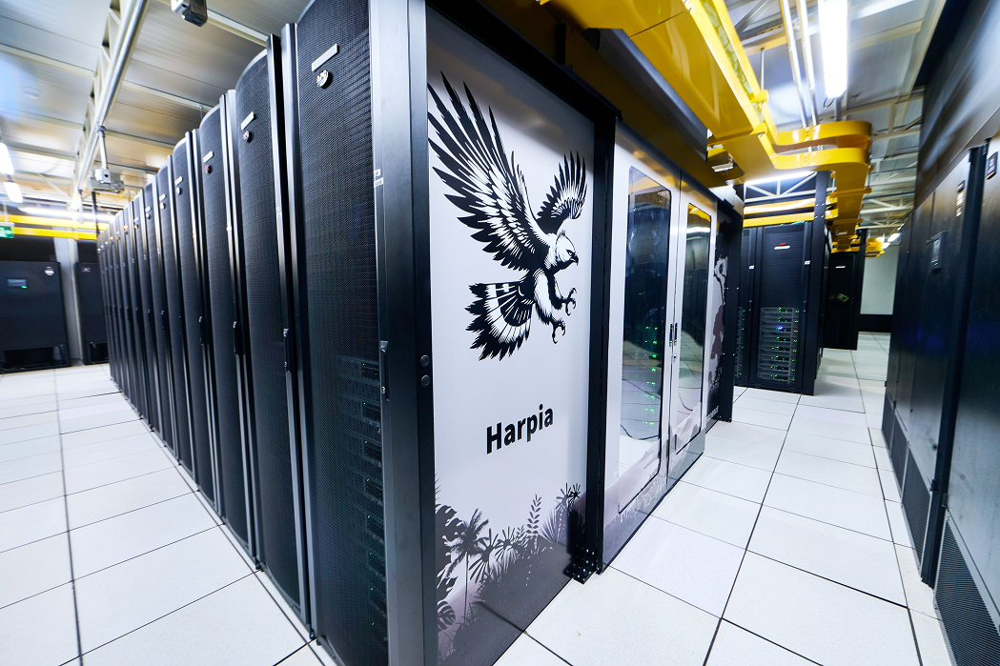

Adote um sistema de monitoramento para hardware do seu HPC
À medida que a quantidade de dados processados aumentam, é necessário garantir que o hardware opere o tempo esperado.
Referência na construção de sistemas de monitoramento de hardware. Cadastre-se para entrar em contato e configurar um sistema para o seu ambiente.
Cadastre-seInfraestrutura
Parceira
Conheça como funciona a infraestrutura da Petrobras
Abrir infraestrutura ↗
Conheça o Harpia
Conhecer ↗
Cenpes
Conhecer ↗